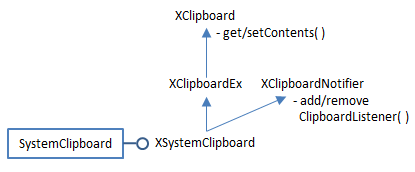
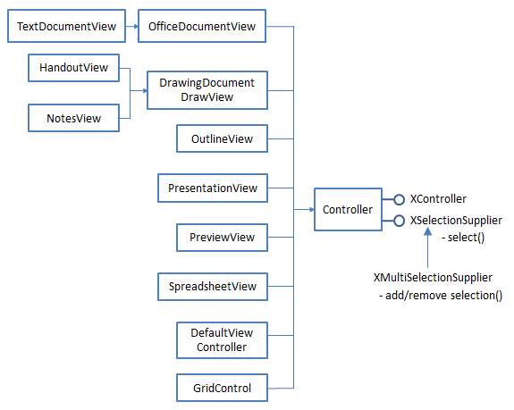
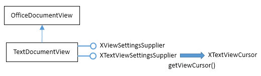
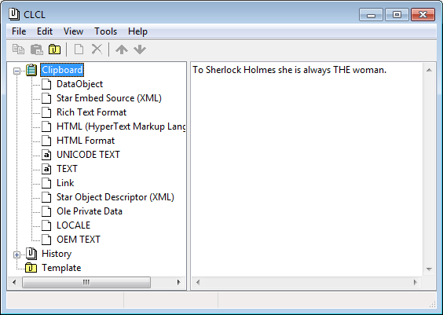

Chapter 43. Using the Clipboard¶
Topics
The Office Clipboard API: adding, retrieving, text, images; Java's Clipboard API adding, retrieving, text, images, 2D arrays; Copy and Pasting in an Office Document: Writer, Calc, Impress, Base
Example folders: "Clipboard Tests" and "Utils"
The clipboard has appeared a few times in previous chapters, notably in the CopySlide.java example of Chapter 17, section 4 – I used Lo.dispatchCmd("Copy") to copy a slide, then a "Paste" dispatch to add it to the slide deck in a different position. The example in section 5 of Chapter 17 (AppendSlides.java) is even hackier since it employs "Copy" and "Paste" dispatches and JNA to click on a dialog box.
The programs are "hacky" because they interact with the OSes windows and dialogs. The "Copy" dispatch asks the OS to copy the highlighted data in the currently active window into the clipboard. My code precedes the dispatch by bringing the necessary window to the front on the desktop, but there's no way for Office to force that selection to be honored. For example, in the short interval before the "Copy" dispatch is sent, it's possible for the user to click the mouse in a different window, making it the active window rather than the one containing the slide.
Another issue with this approach is timing – a dispatchCmd() call from the Office API returns as soon as the message is passed to the OS, but that's not the same as the message being processed by the OS. The dispatch has to be routed back to the application and executed, which may take many milliseconds. For instance, changing Impress from drawing mode (the default) to slide sorter mode can sometimes take over a second, especially the first time the mode is used. In the meantime, my code will continue executing, assuming that Office is in a state that it hasn’t yet reached.
The only simple solution is the liberal scattering of Lo.wait() calls after dispatches to hopefully slow the API's execution enough so that the dispatches have been processed.
You may be wondering why I use "Copy" and "Paste" dispatches when they're so bothersome.
One reason is that there may be no other way of achieving the required result, as in the Impress examples. (However, if you don’t mind using a third-party library, then Apache ODF Toolkit offers a better solution; see Chapter 51, section 4.) Another reason is that "Copy" automatically converts copied data into several useful formats, which would require a lot of coding to duplicate. For example, a copied block of spreadsheet cells is available through the clipboard as plain text, different types of images, in two kinds of spreadsheet exchange format, and as an ODS file! Nevertheless, it's best to avoid "Copy" and "Paste" dispatches where possible, and one alternative is Office's clipboard API. Most (but not all) dispatch-based uses of copy and paste can be replaced by the clipboard API which means that there's no need to rely on OS-level windows being active and on Lo.wait() calls.
Office's clipboard API is modelled on Java's clipboard classes, and there are advantages to using the Java API instead of Office when manipulating complex data.
As a consequence, I've developed two support classes, in Clip.java and JClip.java, which contain helpful functions for using the Office clipboard API and the Java version respectively.
After some short examples of manipulating the clipboard using the Office API and the Java API, I'll look at four slightly longer programs that illustrate how the clipboard can be utilized with a Writer document, a spreadsheet, slides, and a database.
One thing you might want to install before starting any clipboard programming is a decent clipboard viewer. It's helpful for observing the data being copied and pasted by the Office/Java code; I employ ClCl ( https://nakka.com/soft/clcl/index_eng.html).
1. The Office Clipboard API¶
Office's clipboard API is located in the clipboard sub-module inside com.sun.star.datatransfer, and utilizes several services and interfaces from its datatransfer parent. Figure 1 shows the SystemClipboard service and its main interfaces.

Figure 1. The SystemClipboard Services and Interfaces.
If you browse the clipboard module, several classes, such as ClipboardManager, XClipboardManager, and XClipboardFactory, suggest the possibility of creating local clipboards that aren't accessible OS-wide like the system clipboard. Unfortunately, I was unable to figure out how to create one, which parallels the problem that Java programmers have creating local clipboards using the Java API.
Programming details about using the clipboard in Office can be found in chapter 6 of
the Development Guide in the section "Common Application Features". The guide
can be downloaded from
https://wiki.openoffice.org/w/images/d/d9/DevelopersGuide_OOo3.1.0.pdf, or the
relevant section begins online at
https://wiki.openoffice.org/wiki/Documentation/DevGuide/OfficeDev/Common_Application_Features
(or use loGuide "Common Application Features").
My Clip.getClip() support method illustrates how to get a reference to the system clipboard:
// in the Clip class
//global
private static XSystemClipboard cb = null;
// used to store clipboard ref, so only one is created
// by the methods here
public static XSystemClipboard getClip()
{
if (cb == null) {
cb = SystemClipboard.create(Lo.getContext());
/*
cb.addClipboardListener( new XClipboardListener() {
public void disposing(EventObject e) { }
public void changedContents(ClipboardEvent e)
{ System.out.println(">>Clipboard has been updated"); }
});
*/
}
return cb;
} // end of getClip()
A call to SystemClipboard.create() with the current context instantiates the XSystemClipboard interface. It's possible to attach a XClipboardListener at this stage, which will be triggered whenever the clipboard is updated. I didn't find that capability useful in my examples, so commented it out.
The Clip class stores the clipboard reference as a static variable so multiple calls to Clip.getClip() reuse the same reference.
1.1. Adding Data to the Clipboard¶
Data is added to and retrieved from the clipboard using XClipboard.setContents() and XClipboard.getContents(), with the data represented by objects implementing the XTransferable interface. My utilities include three concrete transferable classes: TextTransferable, ImageTransferable, and FileTransferable, which I'll explain shortly.
The Clip class offers an addContents() method for adding transferable data to the clipboard:
// in the Clip class
private static final int MAX_TRIES = 3;
public static boolean addContents(XTransferable trf)
{
int i = 0;
while (i < MAX_TRIES) {
try {
getClip().setContents(trf, null);
return true;
}
catch (IllegalStateException e) {
System.out.println("Problem accessing clipboard...");
Lo.wait(50);
}
i++;
}
System.out.println("Unable to add contents");
return false;
} // end of addContents()
The function attempts to add the transferable data to the clipboard three times before returning false.
I've coded addContents() like this so that it matches the addContents() function in the JClip class. One difference between the Office and Java clipboard APIs is that the Java version of setContents() can raise an exception, and quite often fails when first asked to write something large to the clipboard (see the next section). However, repeating the request, after a short wait, succeeds. It felt prudent to use the same defensive programming in the Office API even though the Office documentation makes no mention of setContents() being able to raise an exception. In other words, Clip.addContents() is a prime example of paranoid programming.
The clipboard remembers ownership, which is changed when data is added by a different user or process. This can be employed at the programming level by attaching an XClipboardOwner listener to the clipboard when XClipboard.setContents() adds data. The listener will be triggered when data which changes the ownership is copied to the clipboard. The following code fragment illustrates the technique:
// add data to the clipboard, and monitor ownership
// XSystemClipboard cb = ...
cb.setContents(data, new XClipboardOwner() {
public void lostOwnership(XClipboard board,
XTransferable contents)
{ System.out.println("Ownership is lost"); }
});
The lostOwnership() method is called with the clipboard reference and the tranferable data just overwritten by the new owner. I didn't use this feature in my addContents() function.
1.2. Retrieving Data from the Clipboard¶
XClipboard.getContents() copies data from the clipboard as an XTransferable instance. One of the surprising, and useful, features of clipboard data is that it can usually be manipulated in several different forms, such as plain text or a bitmap. This means that the XTransferable extraction must state the required data format, which is encoded as a DataFlavor object. The following code fragment illustrates the idea:
// XSystemClipboard cb = ...
XTransferable trf = cb.getContents(); // get transferable
DataFlavor df = // dataflavor for type of data required
data = trf.getTransferData(df);
A DataFlavor object is a mapping between a mime type string and an Office type. The following example maps the "text/plain" mime type to Office's String class:
DataFlavor df = new DataFlavor("text/plain;charset=utf-16",
"Unicode Text", new Type(String.class))
The second argument of the DataFlavor constructor is a 'human representable' string for the mime type.
1.3. Adding and Retrieving Text¶
My TextTransferable class implements the XTransferable interface for storing Unicode data. It defines three methods from XTransferable:
- getTransferData(): this returns the data for a specified DataFlavor
- getTransferDataFlavors(): this returns an array of DataFlavors representing the data formats supported by this transferable
- isDataFlavorSupported(): this returns true or false depending of if the supplied DataFlavor is amongst those supported by the transferable
The TextTransferable class:
// in the Utils/ folder
public class TextTransferable implements XTransferable
{
private final String UNICODE_MIMETYPE =
"text/plain;charset=utf-16";
private String text;
public TextTransferable(String s)
{ text = s; }
public Object getTransferData(DataFlavor df)
throws UnsupportedFlavorException
// return the data matching the df DataFlavor
{
if (!df.MimeType.equalsIgnoreCase(UNICODE_MIMETYPE))
throw new UnsupportedFlavorException();
return text;
}
public DataFlavor[] getTransferDataFlavors()
// return an array of all the dataflavors supported
{
DataFlavor[] dfs = new DataFlavor[1];
dfs[0] = new DataFlavor(UNICODE_MIMETYPE, "Unicode Text",
new Type(String.class));
return dfs;
}
public boolean isDataFlavorSupported(DataFlavor df)
// is the df DataFlavor supported by this transferable?
{ return df.MimeType.equalsIgnoreCase(UNICODE_MIMETYPE); }
} // end of TextTransferable class
TextTransferable supports only the Unicode data format; its flavor maps the "text/plain;charset=utf-16" mime type string to the String class.
The Clip support class has setText() and getText() methods for simplifying the use of TextTransferable:
// in the Clip class
public static boolean setText(String str)
{ return addContents( new TextTransferable(str)); }
public static String getText()
{ return (String) getData("text/plain;charset=utf-16"); }
The setText() method uses the TextTransferable constructor to convert a string into a
transferable that is placed on the clipboard by my addContents() method from above.
getText() passes a mime type string to Clip.getData(), which copies the transferable
from the clipboard, and uses the mime type to decide which kind of data format to use
for the returned data:
// in the Clip class
public static Object getData(String mimeStr)
{
XTransferable trf = getClip().getContents();
if (trf == null) {
System.out.println("No transferable found");
return null;
}
try {
DataFlavor df = findFlavor(trf, mimeStr);
if (df != null)
return trf.getTransferData(df);
else
System.out.println("Mime \"" + mimeStr + "\" not found");
}
catch (com.sun.star.uno.Exception e) {
System.out.println("Could not read clipboard: " + e);
}
return null;
} // end of getData()
Clip.findFlavor() searches through the flavors associated with the transferable looking for the mime type string supplied by the user:
// in the Clip class
public static DataFlavor findFlavor(XTransferable trf,
String mimeStr)
{ DataFlavor[] dfs = trf.getTransferDataFlavors();
for (int i = 0; i < dfs.length; i++) {
if (dfs[i].MimeType.startsWith(mimeStr)) {
return dfs[i];
}
}
System.out.println("Clip does not support mime: " + mimeStr);
return null;
} // end of findFlavor()
The CPTests.java file shows an example of how to add and retrieve text from the clipboard:
// part of CPTests.java...
Lo.loadOffice();
:
Clip.setText(Lo.getTimeStamp());
System.out.println("Added text to clipboard");
System.out.println("Read clipboard: " + Clip.getText());
:
Lo.closeOffice();
1.3. Adding and Retrieving an Image¶
My ImageTransferable class implements XTransferable so a BufferedImage can be stored on the clipboard. It defines the same three methods as TextTransferable, but its data flavor maps the mime type "application/x-openoffice- bitmap;windows_formatname="Bitmap"" to a byte array.
// in the Utils/ folder
public class ImageTransferable implements XTransferable
{
private static final String BITMAP_CLIP =
"application/x-openoffice-bitmap;windows_formatname=\"Bitmap\"";
private byte[] imBytes;
public ImageTransferable(BufferedImage im)
{ imBytes = Images.im2bytes(im); }
public Object getTransferData(DataFlavor df)
throws UnsupportedFlavorException
{ if (!df.MimeType.equalsIgnoreCase(BITMAP_CLIP))
throw new UnsupportedFlavorException();
return imBytes;
} // end of getTransferData()
public DataFlavor[] getTransferDataFlavors()
{ DataFlavor[] dfs = new DataFlavor[1];
dfs[0] = new DataFlavor(BITMAP_CLIP, "Bitmap",
new Type(byte[].class));
return dfs;
}
public boolean isDataFlavorSupported(DataFlavor df)
{ return df.MimeType.equalsIgnoreCase(BITMAP_CLIP); }
} // end of ImageTransferable class
My choice of mapping to a byte array may seem a bit strange, since it would make more sense to associate the "bitmap" string with a BufferedImage. Unfortunately, Office only supports String (used in TextTransferable) and byte[] (used here). This contrasts with the greater flexibility of Java's clipboard API which allows any serializable type to be used in a flavor. This will motivate my use of Java to transfer 2D arrays to and from the clipboard, as described in section 2.3.
I hide the use of ImageTransferable inside two Clip.java methods, setImage() and getImage():
// in the Clip class
public static boolean setImage(BufferedImage im)
{ return addContents(new ImageTransferable(im)); }
public static BufferedImage getImage()
{
XTransferable trf = getClip().getContents();
if (trf == null) {
System.out.println("No transferable found");
return null;
}
DataFlavor df = findImageFlavor(trf);
if (df == null)
return null;
try {
return Images.bytes2im( (byte[])trf.getTransferData(df) );
}
catch (com.sun.star.uno.Exception e) {
System.out.println("Could not retrieve image: " + e);
return null;
}
} // end of getImage()
getImage() transforms the byte array returned by ImageTransferable.getTransferData() into a BufferedImage. Clip.findImageFlavor() does a slightly more sophisticated lookup than the earlier findFlavor(), searching for a suitable flavor for an image mime type.
The CPTests.java file shows how to add and retrieve an image from the clipboard:
// part of CPTests.java...
Lo.loadOffice();
:
BufferedImage im = Images.loadImage("skinner.png");
System.out.println("Image (w,h): " + im.getWidth() + ", " +
im.getHeight());
Clip.setImage(im);
System.out.println("Added image to clipboard");
BufferedImage imCopy = Clip.getImage();
if (imCopy != null)
System.out.println("Image (w,h): " + imCopy.getWidth() + ", " +
imCopy.getHeight());
:
Lo.closeOffice();
1.4. Adding and Retrieving an Image from a File¶
FileTransferable is the third transferable class in my utilities; a filename is passed to the constructor, and the contents of the file are stored on the clipboard:
// in the Utils/ folder
public class FileTransferable implements XTransferable
{
private String mimeType = "application/octet-stream";
// good default
private byte[] fileData = null;
public FileTransferable(String fnm)
{
mimeType = Info.getMIMEType(fnm);
try {
fileData = Files.readAllBytes( Paths.get(fnm));
}
catch(java.lang.Exception e)
{ System.out.println("Could not read bytes from " + fnm); }
} // end of FileTransferable()
public Object getTransferData(DataFlavor df)
throws UnsupportedFlavorException
{ if (!df.MimeType.equalsIgnoreCase(mimeType))
throw new UnsupportedFlavorException();
return fileData;
} // end of getTransferData()
public DataFlavor[] getTransferDataFlavors()
{ DataFlavor[] flavors = new DataFlavor[1];
flavors[0] = new DataFlavor(mimeType, mimeType,
new Type(byte[].class));
return flavors;
}
public boolean isDataFlavorSupported(DataFlavor df)
{ return df.MimeType.equalsIgnoreCase(mimeType); }
} // end of FileTransferable class
Java's Files.readAllBytes() reads in the file's contents as a bytes array. The transferable also stores the mime type string for the data, which it obtains by calling Info.getMIMEType().
The Clip class has setFile() and getFile() for using FileTransferable:
// in the Clip class
public static boolean setFile(String fnm)
{ return addContents(new FileTransferable(fnm)); }
public static byte[] getFile(String fnm)
{ String mimeStr = Info.getMIMEType(fnm);
return (byte[]) getData(mimeStr);
}
getFile() shows why it's necessary to store the the data's mime type in the transferable – it's used as an argument to Clip.getData() to extract the byte array from the clipboard in the correct data format.
CPTests.java shows how to add and retrieve the contents of a file from the clipboard:
// part of CPTests.java...
Lo.loadOffice();
:
Clip.setFile("skinner.jpg");
System.out.println("Added file to clipboard");
byte[] imData = Clip.getFile(fnm);
System.out.println("Image byte length: " + imData.length);
BufferedImage imCopy = Clip.getImage();
if (imCopy != null)
System.out.println("Image (w,h): " + imCopy.getWidth() + ", " +
imCopy.getHeight());
:
Lo.closeOffice();
It's possible to read the file's contents from the clipboard in two ways. Clip.getFile() returns it as a byte array, while Clip.getImage() attempts to convert it to a BufferedImage.
2. Java's Clipboard API¶
Office's clipboard API is closely related to Java's clipboard API, so I had high hopes of not needing Java's API in this chapter. However, Java's ability to pass serializable objects to the clipboard is very useful when copying and pasting spreadsheet cells and database result sets. It's natural to encode them both as 2D arrays which, because they're serializable, can be more easily manipulated with Java than Office.
In the end, I coded a JClip.java support class (note the "J") which duplicates a lot of the code in Clip.java, but using Java classes for the clipboard, transferables, and flavors rather than the Office ones. It's easy to get the two APIs confused, so Table 1 shows their main correspondences.
| Office | Java |
|---|---|
| SystemClipboard.create() | Toolkit.getDefaultToolkit(). |
| getSystemClipboard() | |
| XSystemClipboard inherits | Clipboard; |
| XClipboard, and others | |
| (see Fig. 1); | |
| getContents() never fails (?); | getContents() can fail; |
| Can handle serializable objects; | |
| Can handle String or byte[] | More methods |
| XClipboardListener | FlavorListener |
| XClipboardOwner | ClipboardOwner |
| XTransferable | Transferable |
| DataFlavor | DataFlavor; many predefined constants |
| TextTransferable (my class) | StringSelection (in the JDK) |
Table 1. Corresponding Clipboard Services, Interfaces, and Classes in the Office and Java APIs.
The JClip class uses a similar approach to the Clip class for creating a clipboard reference:
// in the JClip class
private static Clipboard cb = null;
// used to store clipboard ref, so only one is created
// by the methods here
public static Clipboard getClip()
{
if (cb == null) {
cb = Toolkit.getDefaultToolkit().getSystemClipboard();
/*
cb.addFlavorListener( new FlavorListener() {
public void flavorsChanged(FlavorEvent e)
{ System.out.println(">>Flavor change detected"); }
});
*/
}
return cb;
}
The reference is stored in a static variable so the same instance is used when getClip() is called more than once. The Java version of Office's XClipboardListener is FlavorListener, but is triggered only when the type of flavor changes on the clipboard not when the contents change.
JClip.java contains an addContents() method:
// in the JClip class
private static final int MAX_TRIES = 3;
public static boolean addContents(Transferable trf)
{
int i = 0;
while (i < MAX_TRIES) {
try {
getClip().setContents(trf, null);
return true;
}
catch (IllegalStateException e) {
System.out.println("Problem accessing clipboard...");
Lo.wait(50);
}
i++;
}
System.out.println("Unable to add contents");
return false;
} // end of addContents()
Java's Clipboard.setContents() can throw an IllegalStateException. However, exceptions occur infrequently, and my solution of retrying the method three times, after a short wait, deals with the problem.
2.1. Adding and Retrieving Text¶
Java's API includes several predefined flavors, including one for strings (DataFlavor.stringFlavor), and a Transferable class for strings called StringSelection, which makes it unnecessary to code a TextTransferable class.
The JClip support class has setText() and getText() methods:
// in the JClip class
public static boolean setText(String str)
{ return addContents( new StringSelection(str)); }
public static String getText()
{
Transferable trf = getClip().getContents(null);
try {
if (trf != null &&
trf.isDataFlavorSupported(DataFlavor.stringFlavor))
return (String) trf.getTransferData(DataFlavor.stringFlavor);
}
catch (UnsupportedFlavorException e)
{ System.out.println(e); }
catch (IOException e)
{ System.out.println(e); }
return null;
} // end of getText()
JCPTests.java shows how to add and retrieve text from the clipboard:
// part of JCPTests.java...
JClip.setText(Lo.getTimeStamp());
System.out.println("Added text to clipboard");
System.out.println("Read clipboard: " + JClip.getText());
Unlike the Office examples, there's no need to start with a Lo.loadOffice() and end with Lo.closeOffice().
2.2. Adding and Retrieving an Image¶
Java's API has a predefined flavor for images (DataFlavor.imageFlavor), but no Transferable class. My JImageTransferable is comparable with the earlier ImageTransferable class that used the Office API, but returns a BufferedImage from getTransferData() instead of a byte array:
// in the Utils/ folder
public class JImageTransferable implements Transferable
{
private Image im;
public JImageTransferable(Image im)
{ this.im = im; }
public Object getTransferData(DataFlavor df)
throws UnsupportedFlavorException, IOException
{ if (df.equals(DataFlavor.imageFlavor) && im != null)
return im;
else
throw new UnsupportedFlavorException(df);
}
public DataFlavor[] getTransferDataFlavors()
{ DataFlavor[] dfs = new DataFlavor[1];
dfs[0] = DataFlavor.imageFlavor;
return dfs;
}
public boolean isDataFlavorSupported(DataFlavor df)
{
DataFlavor[] dfs = getTransferDataFlavors();
for (int i = 0; i < dfs.length; i++) {
if (df.equals(dfs[i]))
return true;
}
return false;
}
} // end of JImageTransferable class
The JClip support class has setImage() and getImage() methods:
// in the JClip class
public static boolean setImage(BufferedImage im)
{ return addContents(new JImageTransferable(im)); }
public static BufferedImage getImage()
{
Transferable trf = getClip().getContents(null);
if (trf != null &&
trf.isDataFlavorSupported(DataFlavor.imageFlavor)) {
try {
return (BufferedImage)
trf.getTransferData(DataFlavor.imageFlavor);
}
catch (Exception e)
{ System.out.println(e); }
}
return null;
} // end of getImage()
JClip.getImage() is simpler than the version in the Clip class since it doesn't have to convert a byte array to a BufferedImage.
JCPTests.java shows how to add and retrieve an image from the clipboard:
// part of JCPTests.java...
BufferedImage im = Images.loadImage("skinner.png");
System.out.println("Image (w,h): " + im.getWidth() + ", " +
im.getHeight());
JClip.setImage(im);
System.out.println("Added image to clipboard");
BufferedImage imCopy = JClip.getImage();
if (imCopy != null)
System.out.println("Image (w,h): " + imCopy.getWidth() + ", " +
imCopy.getHeight());
It's no different from the example in CPTest.java, except for the use of JClip.
2.3. Adding and Retrieving a 2D Array¶
As I mentioned above, I'm using the Java API because of the simplicity of copying 2D arrays to and from the clipboard.
JArrayTransferable is an implementation of Transferable that stores a 2D array of objects on the clipboard:
// in the Utils/ folder
public class JArrayTransferable implements Transferable
{
private Object[][] vals;
private DataFlavor arrDF;
public JArrayTransferable(Object[][] vals)
{ this.vals = vals;
arrDF = new DataFlavor(Object[][].class, "2D Object Array");
}
public Object getTransferData(DataFlavor df)
throws UnsupportedFlavorException, IOException
{ if (df.equals(arrDF) && vals != null)
return vals;
else
throw new UnsupportedFlavorException(df);
}
public DataFlavor[] getTransferDataFlavors()
{ DataFlavor[] dfs = new DataFlavor[1];
dfs[0] = arrDF;
return dfs;
}
public boolean isDataFlavorSupported(DataFlavor df)
{
DataFlavor[] dfs = getTransferDataFlavors();
for (int i = 0; i < dfs.length; i++) {
if (df.equals(dfs[i]))
return true;
}
return false;
}
} // end of JArrayTransferable class
JArrayTransferable defines a flavor for the array type:
DataFlavor arrDF =
new DataFlavor(Object[][].class, "2D Object Array");
The string argument is a 'human presentable name' rather than a mime type, since there's no good mime type match.
In JClip.java, the set and get methods for an array are:
// in the JClip class
private static final DataFlavor ARRAY_DF =
new DataFlavor(Object[][].class, "2D Object Array");
public static boolean setArray(Object[][] vals)
{ return addContents(new JArrayTransferable(vals)); }
public static Object[][] getArray()
{
Transferable trf = getClip().getContents(null);
if (trf != null && trf.isDataFlavorSupported(ARRAY_DF)) {
try {
return (Object[][]) trf.getTransferData(ARRAY_DF);
}
catch (Exception e)
{ System.out.println(e); }
}
return null;
} // end of getArray()
JCPTests.java shows how to store and retrieve an array:
// part of JCPTests.java...
Object[][] marks = {{50,60,55,67,70},
{62,65,70,70,81},
{72,66,77,80,69} }; // no generics used
JClip.setArray(marks);
System.out.println("Added 2D array to clipboard");
Object[][] arr = JClip.getArray();
I'll be using JClip.setArray() and JClip.getArray() later in this chapter for clipboard copying of spreadsheet cells and database query results (sections 5 and 7).
2.4. More Details on the Java Clipboard API¶
If you'd like a slower, more detailed, explanation of Java's clipboard features, two good sources are:
- Pro Java 8 Programming Terrill Brett Spell Apress, 2015, 3rd ed.
https://apress.com/9781484206423/ Chapter 9 is about the clipboard.
- Core Java, Volume II -- Advanced Features Cay S. Horstmann; Gary Cornell Prentice Hall, 2016, 10th ed.
https://horstmann.com/corejava.html Chapter 7 includes a clipboard section.
3. Copy and Pasting in an Office Document¶
The next four sections look at copying from and pasting to Office documents using the clipboard. The techniques can be divided into two groups: those that use the clipboard without requiring the copy selection to be visible in a window, and those that do need a visible window.
The latter 'Visible' group utilize "Copy" and "Paste" dispatches, and suffer from the problems I mentioned at the start of the chapter (i.e. selecting an active window and timing). A problem I haven't mentioned before is how to programmatically select data, which turns out to be different for each document type.
I'll look at how to use these techniques with four kinds of documents: Writer, Calc, Impress, and Base, as summarized in Table 2.
| Document | Invisible | Visible |
|---|---|---|
| Copy-and-Paste Approach | ||
| Writer | Copy/Paste: | Copy: XTextViewCursor |
| (CopyPasteText.java) | text | Paste: RTF, HTML, ODT |
| Calc | Copy/Paste: | Copy: XCellRange |
| (CopyPasteCalc.java) | 2D array | Paste: SYLK, ODS |
| Impress | none | Copy: XDrawView |
| (CopySlide.java) | Paste: bitmap, PNG, | |
| Base | Copy/Paste: | none |
| CopyResultSet.java) | 2D array |
Table 2. Copy-and-Paste Techniques Applied to Office Documents.
The 'Visible' column shows the advantage and disadvantage of the approach.
The advantage is that pasting can use a range of data formats. For example, a selected grid of cells from a spreadsheet can be saved as a Microsoft SYLK file (an ASCII format for exchanging spreadsheet tables between applications) or as an ODS file.
The disadvantage is that copying involves a different interface for data selection in each document type. For example, text copying employs a text cursor (the XTextViewCursor interface), while the spreadsheet uses cell ranges (XCellRange). The underlying reason is that each document has a different "view" service for how it's drawn in a window, as illustrated by Figure 2.

Figure 2. Different View Services in Office.
The display of a Writer document is managed by TextDocumentView, while a slide presentation can use any one of PresentationView, HandoutView, NotesView, OutlineView, and PreviewView. Most of these services implement selection using the XSelectionSupplier.select() method, but the data that is passed to the select() call depends on the document type.
4. Copy and Pasting in a Writer Document¶
The CopyPasteText.java example copies a sentence from the start of a document to the clipboard, then pastes it back at the end. The program does this in two ways – the 'invisible' approach uses the Clip.java support functions without making Office visible, and the 'visible' approach which visibly selects the sentence so a "Copy" dispatch can copy it to the clipboard. A subsequent "Paste" dispatch places the sentence at the end of the document, as before, but it's also possible to manipulate the clip in formats other than just text.
The main() function of CopyPasteText.java loads startStory.doc, then calls either useClipUtils() or useDispatches():
// in CopyPasteText.java
private static final String FNM = "storyStart.doc";
public static void main(String args[])
{
XComponentLoader loader = Lo.loadOffice();
XTextDocument doc = Write.openDoc(FNM, loader);
if (doc == null) {
System.out.println("Could not open " + FNM);
Lo.closeOffice();
return;
}
useClipUtils(doc, 4); // invisible approach
// useDispatches(doc, 4); // visible
Lo.closeDoc(doc);
Lo.closeOffice();
} // end of main()
useClipUtils() is passed a reference to the document and an integer used to select a sentence:
// in CopyPasteText.java
private static void useClipUtils(XTextDocument doc, int n)
{
XSentenceCursor senCursor = Write.getSentenceCursor(doc);
senCursor.gotoStart(false); // start of text; no selection
gotoSentence(senCursor, n);
// copy to clipboard
Clip.setText(senCursor.getString());
System.out.println("Copied \"" + senCursor.getString() + "\"");
Lo.wait(2000);
XTextCursor cursor = Write.getCursor(doc);
cursor.gotoEnd(false); // go to end of doc
// paste into doc
Write.append(cursor, Clip.getText());
GUI.setVisible(doc, true); // so we can see change
Lo.waitEnter();
} // end of useClipUtils()
private static void gotoSentence(XSentenceCursor senCursor, int n)
{
do {
senCursor.gotoEndOfSentence(true); // select all of sentence
n--;
} while ((n > 0) && senCursor.gotoNextSentence(false));
} // end of gotoSentence()
Sentence selection in gotoSentence() is done with XSentenceCursor, which was previously used in Chapter 5, section 6. The text covered by the cursor is copied to the clipboard by Clip.setText() in useClipUtils().
useClipUtils() ends with a call to GUI.setVisible() so the user can see that the sentence has been pasted at the end of the document.
Visible Cut-and-Paste of Text¶
The hardest part about the 'visible' technique is data selection, which involves two kinds of cursors: XSentenceCursor for moving through the document a sentence at a time, and XTextViewCursor which represents the visible cursor in the Writer window.
View cursors are used to visibly select text in Writer documents rather than the XSelectionSupplier interface shown in Figure 2. Figure 3 shows how XTextViewCursor is related to the TextDocumentView service.

Figure 3. The TextDocumentView Service and XTextViewCursor.
Obtaining an XTextViewCursor involves some casting, which I've hidden inside Writer.getViewCursor():
// the Writer class
public static XTextViewCursor getViewCursor(XTextDocument textDoc)
{
XModel model = Lo.qi(XModel.class, textDoc);
XController xController = model.getCurrentController();
// the controller gives us the TextViewCursor
XTextViewCursorSupplier supplier =
Lo.qi(XTextViewCursorSupplier.class, xController);
return supplier.getViewCursor();
} // end of getViewCursor()
The text document is cast to an XModel interface, which allows its corresponding controller to be obtained. At that point we're positioned on the far right of Figure 2 in XController. The second Lo.qi() cast is the big step, since it travels along the service hierarchy all the way to the left and top of Figure 2. It stops at the TextDocumentView service, and converts XController into XTextViewCursorSupplier, one of the interfaces in Figure 3. The final line of Write.getViewCursor() calls XTextViewCursorSupplier.getViewCursor() to obtain the cursor.
useDispatches() calls Writer.getViewCursor() to get a view cursor, and Write.getSentenceCursor() for a sentence cursor:
// in CopyPasteText.java
private static void useDispatches(XTextDocument doc, int n)
{
GUI.setVisible(doc, true); // *must* be made visible
Lo.wait(2000); // give Office time to appear
XTextViewCursor tvc = Write.getViewCursor(doc);
XSentenceCursor senCursor = Write.getSentenceCursor(doc);
senCursor.gotoStart(false);
// go to start of text; no selection
gotoSentence(senCursor, n);
// move the text view cursor to highlight the current paragraph
tvc.gotoRange(senCursor.getStart(), false);
tvc.gotoRange(senCursor.getEnd(), true);
Lo.dispatchCmd("Copy");
Clip.listFlavors();
// save copied text as RTF & HTML
FileIO.saveString("storyFrag.rtf", Clip.getRTF());
FileIO.saveString("storyFrag.html", Clip.getHTML());
// save embedded text fragment as ODT
FileIO.saveBytes("storyFrag.odt", Clip.getEmbedSource());
Lo.wait(2000);
tvc.gotoEnd(false); // go to end of doc
Lo.dispatchCmd("Paste");
Lo.waitEnter();
} // end of useDispatches()
The sentence cursor is moved as before, by calling gotoSentence(), but it doesn't highlight the text in the window. XTextViewCursor is needed for this, by being assigned the start and end positions of XSentenceCursor. The result is illustrated in Figure 4.

Figure 4. The Highlighted Sentence in the Writer window.
After the copy, the XTextViewCursor is moved to the end of the document and a "Paste" dispatch adds the copied data back.
Just after the "Copy" dispatch, Clip.listFlavors() prints out the flavors (data types) that have been copied to the clipboard. The output is:
No of flavors: 6
1. application/x-openoffice-embed-source-xml;windows_formatname="Star
Embed Source (XML)"
2. text/richtext
3. text/html
4. text/plain;charset=utf-16
5. application/x-openoffice-link;windows_formatname="Link"
6. application/x-openoffice-objectdescriptor-xml;
windows_formatname="Star Object Descriptor (XML)";classname="8BC…"
Plain text is listed as flavor no. 4, but the data is also available in HTML and RTF formats. Flavor no. 1 ("application/x-openoffice-embed-source-xml") is ODF (Open Document Format), which in this case is an ODT file.
Clip.listFlavors() prints this information by getting a copy of the current transferable off the clipboard, and calling its getTransferDataFlavors() method to obtain favor data:
// in the Clip class
public static void listFlavors()
{
XTransferable trf = getClip().getContents();
if (trf == null)
System.out.println("No transferable found");
else
listFlavors(trf);
} // end of listFlavors()
public static void listFlavors(XTransferable trf)
{
DataFlavor[] dfs = trf.getTransferDataFlavors();
System.out.println("No of flavors: " + dfs.length);
for (int i = 0; i < dfs.length; i++)
System.out.println((i+1) + ". " + dfs[i].MimeType);
System.out.println();
} // end of listFlavors()
The ClCl clipboard viewer (https://nakka.com/soft/clcl/index_eng.html) is a more graphical way of viewing this information. For example, the copied text is displayed as in Figure 5.

Figure 5. The ClCl View of the Writer Text.
The different formats are listed below the "Clipboard" node on the left of Figure 5, and the data in a particular format is displayed by clicking on the format name, as in Figure 6 for "Star Embed Source (XML)".

Figure 6. The ClCl "Star Embed Source (XML)" View of the Writer Text.
The advantage of using Clip.listFlavors() is that it displays the Office mime type strings, which are used to select data from the transferable. These strings are employed by the Clip.getXXX() methods:
// in the Clip class
public static String getHTML()
{
byte[] data = (byte[]) getData("text/html");
if (data == null)
return null;
else
return new String(data);
} // end of getHTML()
public static String getRTF()
// text format used by MS
{
byte[] data = (byte[]) getData("text/richtext");
if (data == null)
return null;
else
return new String(data);
} // end of getRTF()
public static byte[] getEmbedSource()
// fragment in binary ODF
{
return (byte[]) getData(
"application/x-openoffice-embed-source-xml;
windows_formatname=\"Star Embed Source (XML)\"");
} // end of getEmbedSource()
Recall that I'm using the Office API, so Clip.getData() must return either a string or a byte array.
These Clip.getXXX() methods are called in useDispatches() in CopyPasteText.java, and the data is saved to a file using FileIO.saveString() or FileIO.saveBytes().
5. Copy and Pasting in a Calc Document¶
CopyPasteCalc.java copies the data in a block of spreadsheet cells to empty cells at the bottom of the sheet. The main() function is similar to the Writer example:
// in CopyPasteCalc.java
private static final String FNM = "Addresses.ods";
public static void main(String args[])
{
XComponentLoader loader = Lo.loadOffice();
XSpreadsheetDocument doc = Calc.openDoc(FNM, loader);
if (doc == null) {
System.out.println("Could not open " + FNM);
Lo.closeOffice();
return;
}
useClipUtils(doc); // invisible approach
// useDispatches(doc); // visible
Lo.closeDoc(doc);
Lo.closeOffice();
} // end of main()
useClipUtils() employs Clip support functions so the Calc window can remain hidden, while useDispatches() needs the window to be visible so that "Copy" and "Paste" dispatches can work.
useClipUtils() utilizes the SheetCellRange service which is inherited by the Spreadsheet service (see Chapter 19, section 4, Figure 5). A block of cells is selected by calling Calc.getCellRange() which returns an XCellRange instance. The data covered by that range is extracted as a 2D array by Calc.getCellRangeArray(), and stored on the clipboard by JClip.setArray():
// in CopyPasteCalc.java
private static void useClipUtils(XSpreadsheetDocument doc)
{
XSpreadsheet sheet = Calc.getSheet(doc, 0);
XCellRange cellRange = Calc.getCellRange(sheet,0,2,6,2); //row 3
Object[][] data = Calc.getCellRangeArray(cellRange);
JClip.setArray(data); // copy array to clipboard
Lo.wait(2000);
XCellRange toCellRange = Calc.getCellRange(sheet,0,8,6,8); //row 9
Object[][] cbData = JClip.getArray(); // paste in array
Calc.setCellRangeArray(toCellRange, cbData);
GUI.setVisible(doc, true); // so can see the paste
Lo.waitEnter();
} // end of useClipUtils()
Calc.getCellRangeArray() wraps the XCellRangeData interface, which was explained in Chapter 20, section 2.3:
// in the Calc class
public static Object[][] getCellRangeArray(XCellRange cellRange)
{
XCellRangeData crData = Lo.qi(XCellRangeData.class, cellRange);
return crData.getDataArray();
}
The process of pasting the cell range back into the sheet requires another call to Calc.getCellRange() to select a new block of cells. Then the clip data as an array is inserted with Calc.setCellRangeArray().
Visible Cut-and-Paste of Cells¶
The 'visible' technique also uses XCellRange, but as an argument to XSelectionSupplier.select() so the cells are highlighted in the Calc window. The useDispatches() method is:
// in CopyPasteCalc.java
private static void useDispatches(XSpreadsheetDocument doc)
{
GUI.setVisible(doc, true); // Office *must* be visible
XSpreadsheet sheet = Calc.getSheet(doc, 0);
XCellRange cellRange = Calc.getCellRange(sheet,0,2,6,2); // row 3
XSelectionSupplier selSupp = GUI.getSelectionSupplier(doc);
selSupp.select(cellRange);
Lo.dispatchCmd("Copy");
Clip.listFlavors();
Lo.wait(2000);
// save embedded cells as ODS
FileIO.saveBytes("AddressesFrag.ods", Clip.getEmbedSource());
// save cells as SYLK file
FileIO.saveString("AddressesFrag.slk", Clip.getSylk());
XCellRange toCellRange = Calc.getCellRange(sheet,0,8,6,8); // row 9
// GUI dialog asks about insertion if range is too small
// and data repeats if range is too big
selSupp.select(toCellRange);
Lo.dispatchCmd("Paste");
Lo.waitEnter();
} // end of useDispatches()
The selection of cell ranges is done twice in useDispatches() – a cell range is required for the block of cells being copied, and another range is necessary for the empty cell block where the data will be pasted. Figure 7 shows the cells being selected, just prior to their copying.

Figure 7. The Highlighted Cells in the Calc Window.
The flavors list printed by Clip.listFlavors() is longer than the one for text:
No of flavors: 14
1. application/x-openoffice-embed-source-xml;windows_formatname="Star
Embed Source (XML)"
2. application/x-openoffice-objectdescriptor-xml;
windows_formatname="Star Object Descriptor (XML)";classname="47BB…"
3. application/x-openoffice-gdimetafile;
windows_formatname="GDIMetaFile"
4. application/x-openoffice-emf;windows_formatname="Image EMF"
5. application/x-openoffice-wmf;windows_formatname="Image WMF"
6. image/png
7. application/x-openoffice-bitmap;windows_formatname="Bitmap"
8. image/bmp
9. text/html
10. application/x-openoffice-sylk;windows_formatname="Sylk"
11. application/x-openoffice-link;windows_formatname="Link"
12. application/x-openoffice-dif;windows_formatname="DIF"
13. text/plain;charset=utf-16
14. text/richtext
The additions are mostly graphic types, but "Sylk" and "DIF" are ASCII-based formats for exchanging spreadsheets between applications. The corresponding ClCl display is shown in Figure 8.

Figure 8. The ClCl View of the Calc Cells.
Flavors numbers 1 and 10 in the list above allow the data to be saved as an ODS file and as a SYLK file. Clip.getEmbedSource() is called in useDispatches() to return the byte array holding the ODS data, and Clip.getSylk() returns the SYLK text. The code for Clip.getSylk():
// in the Clip class
public static String getSylk()
// text-based spreadsheet format used by MS
{
byte[] data = (byte[]) getData(
"application/x-openoffice-sylk;windows_formatname=\"Sylk\"");
if (data == null)
return null;
else
return new String(data);
} // end of getSylk()
5. Copy and Pasting in an Impress Document¶
Table 2 shows that the Office API has no 'invisible' way of copying a slide, so I have to use "Copy" and "Paste" dispatches to a visible Impress window. I went through two examples using this technique in Chapter 17, section 4 ("Rearranging a Slide Deck") and section 5 ("Appending Slide Decks Together"). Both require Impress to be in slide sorter mode so Draw.gotoPage() can select a slide.
The CopySlide.java example in this section is a simplified version of the deck rearranger: the slide is copied without being pasted back. Instead, the contents of the clipboard are saved in various formats.
The main() function loads a slide deck and calls copySave() to do the hard work:
// in CopySlide.java
private static final String FNM = "algs.odp";
public static void main(String args[])
{
XComponentLoader loader = Lo.loadOffice();
XComponent doc = Lo.openDoc(FNM, loader);
if (doc == null) {
System.out.println("Could not open the file: " + FNM);
Lo.closeOffice();
return;
}
GUI.setVisible(doc, true);
Lo.wait(2000);
copySave(doc, 3); // save copy of 4th slide
Lo.waitEnter();
Lo.closeDoc(doc);
Lo.closeOffice();
} // end of main()
copySave() switches Office to slide sorter mode, goes to the specified slide, which highlights it in the window. The "Copy" dispatch copies that slide to the clipboard.
// in CopySlide.java
private static void copySave(XComponent doc, int fromIdx)
{
XController ctrl = GUI.getCurrentController(doc);
Lo.dispatchCmd("DiaMode");
// Switch to slide sorter view
Lo.delay(5000); // give Office plenty of time to do it
XDrawPage fromSlide = Draw.getSlide(doc, fromIdx);
Draw.gotoPage(ctrl, fromSlide); // select this slide
Lo.dispatchCmd("Copy");
System.out.println("Copied slide no. " + (fromIdx+1));
Clip.listFlavors();
// save embedded slide as ODP;
FileIO.saveBytes("slide" + (fromIdx+1) +".odp",
Clip.getEmbedSource());
// save slide as XML ('flat' ODP)
FileIO.saveString("slide" + (fromIdx+1) +".fodp",
Clip.getXMLDraw());
// save slide as PNG image
Images.saveImage(Clip.getImage(), "slide" + (fromIdx+1) +".png");
// for another approach see Slide2Image.java in Draw Tests/
// save slide as a Bitmap
FileIO.saveBytes("slide" + (fromIdx+1) +".bmp",
Clip.getBitmap());
Lo.dispatchCmd("DrawingMode");
} // end of copySave()
Clip.listFlavors() reports the data types that can be copied from the clipboard:
No of flavors: 9
1. application/x-openoffice-objectdescriptor-xml;
windows_formatname="Star Object Descriptor (XML)";classname="9176…"
2. application/x-openoffice-embed-source-xml;
windows_formatname="Star Embed Source (XML)"
3. application/x-openoffice-drawing;
windows_formatname="Drawing Format"
4. application/x-openoffice-gdimetafile;
windows_formatname="GDIMetaFile"
5. application/x-openoffice-emf;windows_formatname="Image EMF"
6. application/x-openoffice-wmf;windows_formatname="Image WMF"
7. image/png
8. application/x-openoffice-bitmap;windows_formatname="Bitmap"
9. image/bmp
One of the new mime types is flavor no. 3, "application/x-openoffice-drawing", which encodes an ODP file in XML.
The clipboard display in ClCl is shown in Figure 9.

Figure 9. The ClCl View of the Impress Slide.
The code at the end of copySave() reads and saves the clipboard data in four ways.
Clip.getXMLDraw() retrieves the XML for the ODP file:
// in the Clip class
public static String getXMLDraw()
// a 'flat' XML version of the draw/slide copy
{
byte[] data = (byte[]) getData(
"application/x-openoffice-drawing;
windows_formatname=\"Drawing Format\"");
if (data == null)
return null;
else
return new String(data);
} // end of getXMLDraw()
The text is saved to a file with the extension "fodp", indicating that it holds a 'flat' XML version of the ODP document. This file can be opened in Office by double clicking upon it.
copySave() also saves the slide as PNG and bitmap images. A better way to export an image is explained in Chapter 17, section 6 ("Saving a Slide as an Image"); it's better because it doesn't require the Office window to be visible.
6. Copy and Pasting in Base Data¶
Table 2 states that the Office API has no 'visible' way of copying a database, although I suspect it may have. I've spent a long time trying to coax DefaultViewController (see Figure 2), the view service for Base, into action. Since it supports the XSelectionSupplier interface, it should be able to select things for copying. Another of its tantalizing interfaces is XDatabaseDocumentUI which seems to offer the ability to open a table window, but I couldn’t get that to work either. The closest I've got is described in Chapter 35, section 3 ("Debugging Database Code") with Base.showTables() which opens all the databases' tables using a "DBTableOpen" dispatch.
It's interesting to investigate what I'm losing in terms of data formats by not utilizing a "Copy" dispatch. It's possible to find out by manually copying a database table from Base, then using ClCl to look at the clipboard. The result is shown in Figure 10.

Figure 10. The ClCl View of a Copied Database Table.
It appears that the copied table could be saved in RTF and HTML formats. The "SBA-DATAFORMAT' entry refers to the mime type "application/x-openoffice-sba- dataexchange;windows_formatname=\"SBA-DATAFORMAT\"", but I've no idea what SBA stands for. An online acronym finder site (https://acronymfinder.com/) suggests "Susan B. Anthony", but I doubt it.
The Invisible Cut-and-Paste of Data¶
I've described the 'invisible' approach for databases previously, in Chapter 36, section 3 ("Copying Data From Base To Calc"), which converts a Base table into a spreadsheet. SQL is used to generate a result set spanning the table, then Base.getResultSetArr() converts the set into a 2D array of Objects. The array is written into a new spreadsheet using XCellRangeData.setDataArray().
The same approach is used in CopyResultSet.java in this section, except that the array is copied to the clipboard with JClip.setArray():
// in CopyResultSet.java
private static final String FNM = "liangTables.odb";
public static void main(String[] args)
{
XComponentLoader loader = Lo.loadOffice();
XOfficeDatabaseDocument dbDoc = Base.openBaseDoc(FNM, loader);
if (dbDoc == null) {
System.out.println("Could not open database " + FNM);
Lo.closeOffice();
return;
}
XConnection conn = null;
try {
XDataSource dataSource = dbDoc.getDataSource();
conn = dataSource.getConnection("", ""); // no login/password
XResultSet rs = Base.executeQuery(
"SELECT * FROM \"Course\"", conn);
// BaseTablePrinter.printResultSet(rs);
// rs.beforeFirst(); // fails if ResultSet is TYPE_FORWARD_ONLY,
// which is the default
Object[][] rsArr = Base.getResultSetArr(rs);
Base.printResultSetArr(rsArr);
JClip.setArray(rsArr);
// Clip.listFlavors();
JClip.listFlavors();
System.out.println("Saving array from clipboard");
FileIO.saveArray("queryResults.txt", JClip.getArray());
}
catch(SQLException e) {
System.out.println(e);
}
Base.closeConnection(conn);
Base.closeBaseDoc(dbDoc);
Lo.closeOffice();
} // end of main()
As with previous examples, listFlavors() displays the flavors available to Office. The Clip.java function reports no flavors since the serialized 2D array added to the clipboard isn't an Office mime type. It's necessary to call the JClip.java version of the function, which prints:
No of flavors: 1
1. application/x-java-serialized-object; class="[[Ljava.lang.Object;"
The corresponding ClCl display is shown in Figure 11.

Figure 11. The ClCl View of the ResultSet Data.
When I was debugging the code, I initially printed the result set using BaseTablePrinter.printResultSet(). Unfortunately, this would make the subsequent call to Base.getResultSetArr() return an array containing only the column headers and no data. BaseTablePrinter.printResultSet() moves the result set cursor through the results, then returns after having moved the cursor to the end of the data.
Base.getResultSetArr() assumes the cursor is at the start of the data, and moves it forward until it reaches the end of the data. This means that when it's passed a cursor already at the end of the table, it generates no array data.
One solution is to reset the cursor to the start, using:
rs.beforeFirst();
but this usually fails because most result sets use the default TYPE_FORWARD_ONLY setting which restricts the cursor to only moving forward.
My solution is to extract the 2D array with Base.getResultSetArr(), and print the array with Base.printResultSetArr(). Typical output is:
Result set array size: 5 x 5
courseId, subjectId, courseNumber, title, numOfCredits
--------------------------------------------------------------
11111, CSCI, 1301, Introduction to Java I, 4
11112, CSCI, 1302, Introduction to Java II, 3
11113, CSCI, 3720, Database Systems, 3
11114, CoE , 3721, Algorithms, 3
It's not as pretty as BaseTablePrinter.printResultSet(), but avoids the cursor problem.
The array data retrieved from the clipboard is stored as text by calling FileIO.saveArray(). The resulting queryResults.txt file contains:
courseId subjectId courseNumber title numOfCredits
11111 CSCI 1301 Introduction to Java I 4
11112 CSCI 1302 Introduction to Java II 3
11113 CSCI 3720 Database Systems 3
11114 CoE 3721 Algorithms 3